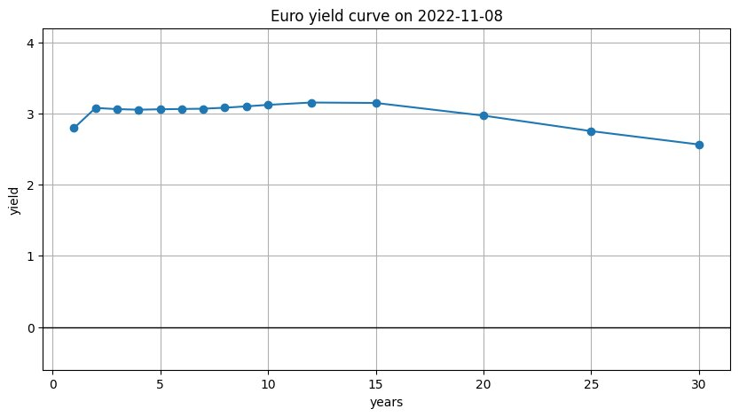
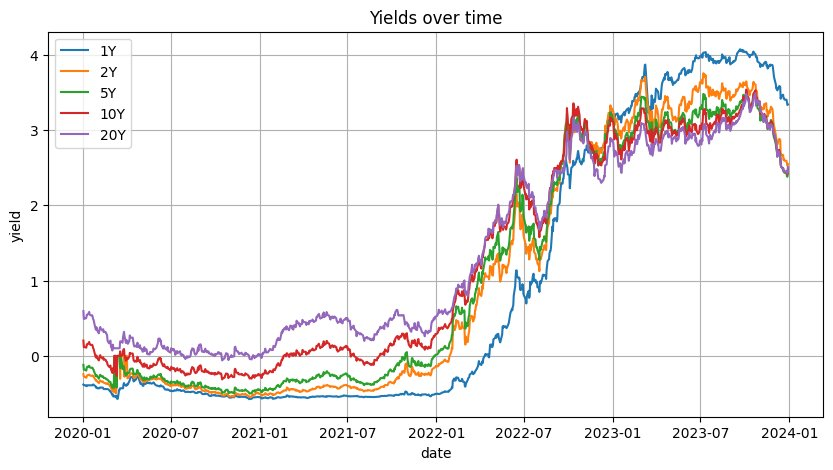
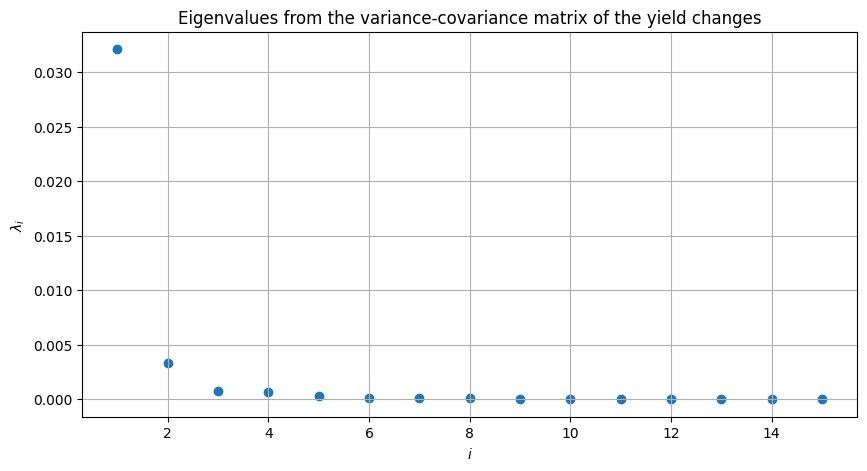
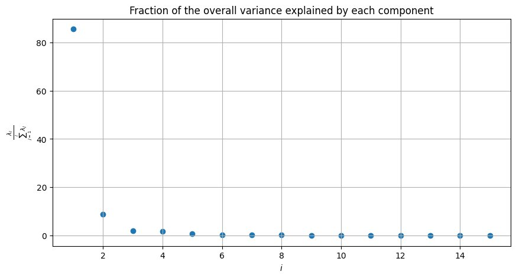
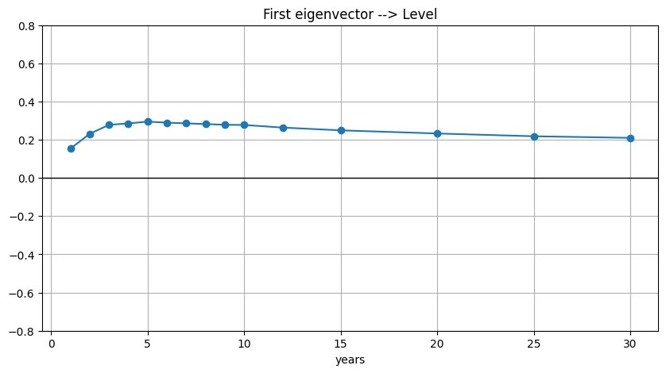
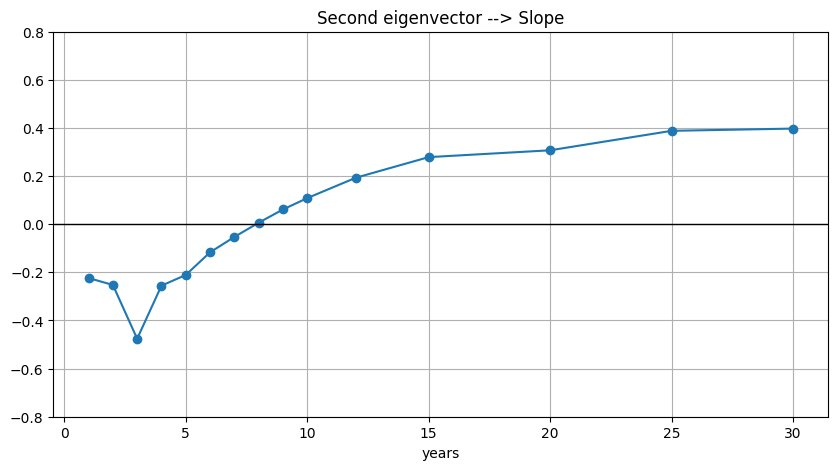
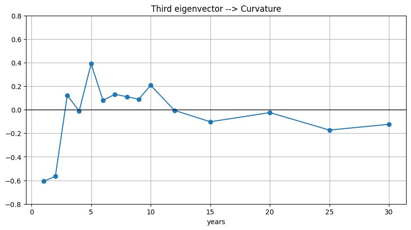
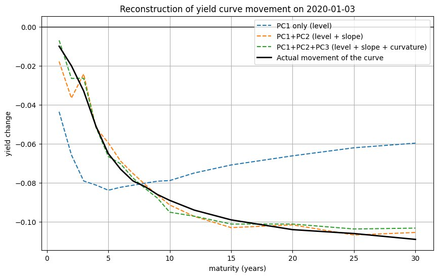

Econometrics · Python · Fixed Income
01 · Context
A yield curve is described by fifteen data points — one yield per maturity — yet in practice these points do not move independently. When the ECB changes rates, the entire curve shifts. When inflation expectations change at the short end, the long end may barely move. This high co-movement means that most of the information in fifteen variables can be captured by far fewer underlying factors.
Principal Component Analysis (PCA) is a dimensionality reduction technique that identifies these underlying factors — called principal components — ordered by how much of the total variance each one explains. Applied to yield curve data, PCA consistently recovers three economically meaningful factors: level, slope, and curvature. This lab verifies that result empirically using daily Euro swap rate data from 2020 to 2023, a period that includes the sharpest rate-hiking cycle in a generation.
The period from 2020 to 2023 is particularly instructive: it captures the zero-rate environment, the inflationary shock of 2022, and the ECB's tightening response — making it an unusually rich dataset for studying yield curve dynamics.
02 · The Data
The dataset contains 1,043 daily observations across fifteen maturities (1Y, 2Y, 3Y, 4Y, 5Y, 6Y, 7Y, 8Y, 9Y, 10Y, 12Y, 15Y, 20Y, 25Y, 30Y), derived from swap-rate data published by the Intercontinental Exchange (ICE) Group — a standardized, liquid benchmark widely used by institutional fixed income investors.

Euro yield curve on 2022-11-08 — a typical inverted short-end profile during the tightening cycle

Selected maturities over time — the 2022 rate shock is clearly visible across the entire curve
The time series chart reveals the defining feature of this period: yields were negative or near-zero from 2020 through early 2022, then surged dramatically as the ECB began its tightening cycle. The short end (1Y, 2Y) rose faster than the long end, compressing and eventually inverting the curve — a pattern consistent with a market pricing in high short-term rates expected to normalize over time.
Python — Loading and preparing the data
import numpy as np
import pandas as pd
import matplotlib.pyplot as plt
df = pd.read_excel('Lab8_data.xlsx', index_col=0)
maturities = np.array([1, 2, 3, 4, 5, 6, 7, 8, 9, 10, 12, 15, 20, 25, 30])
# Compute daily yield changes
dY = df - df.shift(1)
dY = dY.dropna()
# Variance-covariance matrix of yield changes
cov_dY = dY.cov()
03 · PCA Results
PCA is applied to the variance-covariance matrix of daily yield changes rather than yield levels, which is standard in fixed income practice since it captures how the curve moves rather than where it sits. The eigendecomposition is computed via numpy.linalg.eigh, which is optimised for symmetric matrices.

Eigenvalues — the first dominates by an order of magnitude

Variance explained — PC1 alone accounts for ~86% of total variance
Level
~86% of variance
Parallel shifts of the entire curve. When rates rise or fall across all maturities simultaneously.
Slope
~9% of variance
Changes in the steepness of the curve. Short and long ends move in opposite directions.
Curvature
~3% of variance
Butterfly movements. The middle of the curve moves relative to the short and long ends.
Together, three components explain over 98% of the total variance in daily yield changes across fifteen maturities — confirming that the Euro yield curve, despite its dimensionality, is driven by a small number of underlying risk factors.
Python — Eigendecomposition of the covariance matrix
vals_dY, vecs_dY = np.linalg.eigh(cov_dY) # Sort by descending eigenvalue vals_dY = np.flip(vals_dY) vecs_dY = np.flip(vecs_dY, axis=1) # First three eigenvectors (principal components) x1 = vecs_dY[:, 0] # Level x2 = vecs_dY[:, 1] # Slope x3 = vecs_dY[:, 2] # Curvature # Fraction of variance explained variance_explained = 100 * vals_dY / vals_dY.sum()
04 · The Principal Components
Each eigenvector describes how each maturity loads onto that component. The shape of the eigenvector is what gives it its economic interpretation.

PC1 — Level: uniformly positive loadings across all maturities

PC2 — Slope: negative at short end, positive at long end

PC3 — Curvature: oscillates, capturing mid-curve movements
The level component (PC1) has near-uniform positive loadings across all maturities, confirming it captures parallel shifts — when this factor moves, the entire curve rises or falls together. The slope component (PC2) is negative at short maturities and positive at long ones, reflecting steepening or flattening dynamics. The curvature component (PC3) oscillates, capturing movements where the belly of the curve moves relative to the wings — the classic fixed income "butterfly" trade.
These shapes are not imposed by the model. They emerge directly from the data, which makes their alignment with well-known fixed income intuition a meaningful empirical validation.
05 · Reconstruction
To validate the PCA decomposition, each daily yield curve movement is reconstructed progressively — first using PC1 only, then adding PC2, then PC3. The factor scores (projections of the actual movement onto each eigenvector) are computed as inner products.
Python — Projecting onto principal components
dy = dY.iloc[0].values # Yield change on a given day # Factor scores: how much each PC contributes f1 = dy @ x1 f2 = dy @ x2 f3 = dy @ x3 # Progressive reconstruction recon1 = f1 * x1 recon2 = f1 * x1 + f2 * x2 recon3 = f1 * x1 + f2 * x2 + f3 * x3

Reconstruction of yield curve movement on 2020-01-03 — adding each PC progressively closes the gap with the actual curve movement (black line)
The reconstruction plot shows that PC1 alone (blue dashed) already captures the broad direction of the move. Adding PC2 (orange) corrects for differences between short and long end. PC3 (green) closes most of the remaining gap. The three-component reconstruction tracks the actual curve movement closely across all fifteen maturities.
06 · Key Takeaway
The result that three factors explain over 98% of yield curve variance is not merely a mathematical curiosity — it is the empirical foundation behind how fixed income desks manage interest rate risk. Duration hedging addresses PC1 (level). Curve trades — steepeners and flatteners — target PC2 (slope). Butterfly trades isolate PC3 (curvature).
A rates portfolio manager who understands the PCA structure of the yield curve can decompose any position into its level, slope, and curvature exposures — and hedge each independently. This lab demonstrates that decomposition empirically, using real market data across one of the most volatile rate environments in recent history.
The 2022 tightening cycle — visible as a near-vertical spike in the yields-over-time chart — provides an unusually clean test of the level factor: virtually the entire move in that period was a parallel upward shift, captured almost entirely by PC1 alone.